Récord 2024 · 5.9 mm/año
AUMENTO DEL
AUMENTO DEL
NIVEL DEL MAR
CausasConsecuenciasAdaptación
- Omar Ernesto Rivera Hernández
- Joseph Jeremy Gonzales Hernández
- Gerardo José Gimenez Sosa
- Camila Celeste Fabián Echegoyen
- Jonathan David Vazques Flores
Usa las flechas ← → o desplaza para navegar

01 · Delimitación
Del océano entero
a una casa sobre pilotes

Tema general
Ecosistemas marino-costeros

Tema específico
Manglares · Palafitos · Casas flotantes

Objetivos
Explicar · Dimensionar · Evaluar
02 · Problemática
El agua avanza
más rápido que
la adaptación
- Calentamiento global
- Manglar vulnerable
- Comunidades desplazadas
- Brecha institucional
- Nuevas formas de construir

03 · Base científica
¿Cómo se mide?

Mareógrafos
En la costaRegistro continuoSerie histórica

Altimetría satelital
Desde la órbitaCobertura globalMar abierto
Dos métodos independientes · una misma señal
04 · Causas físicas
Dos mecanismos,
un mismo resultado

Dilatación térmica
Más calorMás volumen

Deshielo continental
GlaciaresCapas polares
+ calor
+ masa
= mar más alto
07 · Consecuencias
Tres frentes de impacto

−60%
Biodiversidad
Manglar perdido en El Salvador desde 1950

216 M
Migración
Desplazados climáticos hacia 2050

Turismo
Economía
Playas e infraestructura expuestas
09 · Comparador
Arrastra para ver la pérdida


El manglar es infraestructura natural · sostiene el suelo y frena el oleaje
10 · Marco normativo
Protección en el papel

Ley de Medio Ambiente
Artículo 74

Áreas Naturales Protegidas
Régimen de conservación

Convención Ramsar
Humedal internacional

NDC 2022
Compromisos climáticos
La norma existe · la brecha está en aplicarla
11 · Adaptación
Retirarse, acomodarse
o protegerse

Retirarse
ReubicarCosto social

Acomodarse
ElevarConvivir con el agua

Protegerse
DiquesManglar restaurado
12 · Arquitectura
Casas que se elevan,
casas que flotan

Palafitos
Tradición milenariaMateriales localesBajo costo

Casas flotantes
PontonesBarrios anfibiosPaíses Bajos
14 · Conclusiones
Qué hacer, empezando ahora

Restaurar manglares

Vivienda elevada de bajo costo
